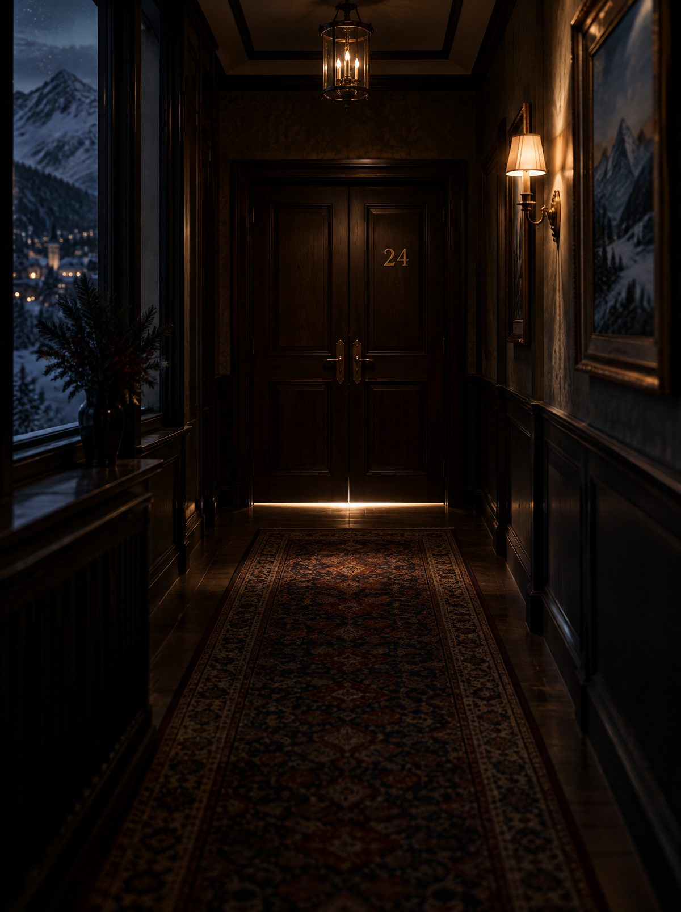
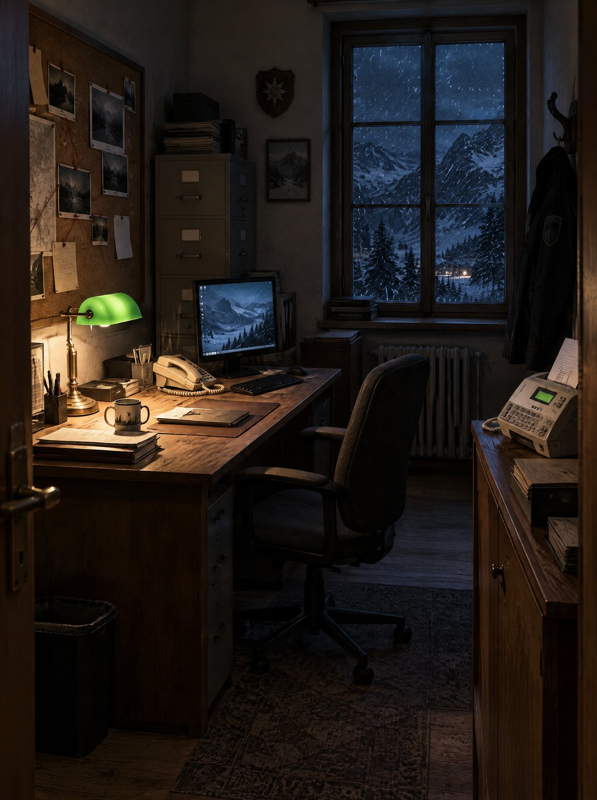

Einsatzmappe für die SpielleitungAlles, was du zum Vorbereiten und Verschenken brauchst. Bitte zuerst lesen, dann die Unterlagen verteilen.
Blatt 1
Lagebild
In der Nacht zum ersten Dezember schließt ein Schneesturm das Berghotel Sternwand ein. Die Passstraße ist verschüttet, die Seilbahn steht still. Am Morgen liegt der Hotelier Konrad Wendt tot in Suite 24. Spurensicherung, Notarzt und Verstärkung kommen nicht auf den Berg.
Ermittelt wird zu zweit, an vierundzwanzig Abenden, jeden Tag hinter einer neuen Tür. Jede Person spielt auf dem eigenen Handy eine eigene Rolle mit eigenen Räumen, Hinweisen und Unterlagen. Keine kommt allein weiter: Den Tagescode findet ihr nur, wenn ihr redet, vergleicht und kombiniert. Am Heiligabend schreibt ihr die Anklage und erlebt gemeinsam das Finale.

Rolle AErmittlung vor Ort
Eigentlich im Urlaub, jetzt die einzige Polizei auf dem Berg. Durchsucht Zimmer, sichert Spuren mit Puder und Spurenlampe, knackt Schlösser und verhört die Verdächtigen.
Unterlagen A, 12 Seiten

Rolle BPräsidium im Tal
Die einzige Verbindung nach draußen. Hat Datenbanken, Archive, Labor und Fax, sieht aber nichts vom Tatort. Prüft Spuren, gräbt in alten Akten und verschafft sich Zugang zu gesperrten Systemen.
Fallakte B, 14 Seiten
Ausrüstung
Zwei Handys oder Tablets mit Internet und aktuellem Browser
Ton an, mit Kopfhörern wird es noch dichter
Ein Drucker für zwei Stapel A4, am schönsten in Farbe
Schere und etwas Klebeband oder Klebestift
Telefon oder Videoanruf, falls ihr nicht im selben Raum seid
Pro Abend meist 15 bis 30 Minuten
Sechs Menschen im Haus. Alle haben etwas zu verbergen.
Rollen verteilen. Überlege, wer oben im Hotel ermittelt (Rolle A) und wer unten im Präsidium sitzt (Rolle B). Beide Rollen sind gleich wichtig und gleich lang.
Unterlagen drucken. Druck die Datei Unterlagen A für Rolle A und die Datei Fallakte B für Rolle B, jeweils einseitig auf A4. Wähle beim Drucken „Tatsächliche Größe“ oder 100 Prozent, damit Ausweis und Karten die richtigen Maße haben.
Siegel anbringen. Auf Seite 1 jedes Stapels stehen die Banderolen. Ausschneiden, jedes versiegelte Blatt einmal falten, Schrift nach innen, die Banderole mit derselben Nummer quer darüberlegen und die Enden hinten festkleben. Am besten bereitet ihr die Stapel gegenseitig vor, dann sieht niemand beim Falten etwas, das erst später dran ist. Die App sagt später, wann welches Siegel gebrochen wird.
Dienstausweis fertig machen. Bei Rolle A liegt der Dienstausweis bei, Blatt A2. Ausschneiden, in der Mitte falten, zusammenkleben. Name und Foto kommen dazu, in der App auch als Selfie.
Mappen übergeben. Jede Person bekommt ihren Stapel und ihren Link oder QR Code von Blatt 3. Wer eine persönliche Botschaft für Heiligabend schreiben möchte, erstellt vorher die Geschenklinks auf Blatt 5.
Was in den Stapeln steckt
Offen auf den Tisch kommen Willkommensbrief, Ausweis und Verdächtigentafel (A) sowie Deckblatt und Zugangsblatt (B). Alles andere bleibt versiegelt: Belegungsplan, Dienstpläne, Briefe, Gutachten, Laborbefunde, Verhörkarten und die Anklageschrift.
Nicht in die versiegelten Blätter schauen. Auch nicht ganz kurz. Das Hotel merkt so etwas. M. W.
So sieht ein versiegeltes Blatt aus
B3Versiegelt · erst öffnen, wenn die App es sagtZimmer 24
Gefaltet, Schrift nach innen, Banderole mit der passenden Nummer quer darüber, Enden hinten festgeklebt. So liegen die Blätter neben dem Handy, bis die App zum Beispiel sagt: „Öffne jetzt Umschlag B3“.
Jede Rolle hat ihren eigenen Zugang. Mit der Kamera scannen oder den Link im Browser öffnen, am besten auf dem Handy, auf dem auch gespielt wird.
Rolle AErmittlung vor Ortkuhleszeug.github.io/sternwand/?r=a
Rolle BPräsidium im Talkuhleszeug.github.io/sternwand/?r=b
Zugangscode STERNWAND
Einmal beim ersten Start eingeben. Danach tragt ihr eure Vornamen ein, und das Intro beginnt. Mit einem Geschenklink von Blatt 5 entfällt der Code, die Namen stehen dann schon drin.
Wann öffnen sich die Türen?
Jeden Tag um Mitternacht deutscher Zeit öffnet sich eine neue Tür, vom 1. bis zum 24. Dezember. Verpasste Abende lassen sich jederzeit nachholen, im Januar sind alle Türen offen. Am 24. Dezember wartet das Finale.
123456789101112131415161718192021222324
Der Spielstand wird im Browser des Handys gespeichert. Deshalb immer auf demselben Gerät und im selben Browser spielen und nicht im privaten Modus. Ein Konto braucht ihr nicht.
Tür öffnen. Beide öffnen in ihrer App die Tür des Tages. Oben steht die Szene, auf Wunsch vorgelesen.
Umsehen. Im Raumbild leuchten Stellen, die man antippen kann: Schubladen, Safes, Telefone, Rechner, Spuren. Manche Stellen öffnen ein versiegeltes Blatt aus der Mappe.
Telefonieren. Was die eine Rolle findet, braucht fast immer die andere. Beschreibt euch gegenseitig, was ihr seht, lest Zahlen vor, vergleicht Uhrzeiten.
Tagescode finden. Aus euren Puzzleteilen ergibt sich ein Wort oder eine Zahl. Beide tragen den Code in ihrer App ein.
Erkenntnis hören. Ist der Code richtig, wird das Ergebnis verlesen und landet in den Ermittlungsnotizen. Damit geht es am nächsten Abend weiter.
Wenn ihr festhängt
Unter jedem Tagescode gibt es Tipps, die sich nacheinander aufdecken lassen und Schritt für Schritt näher an die Lösung führen. Bei den Minispielen gibt es kein Scheitern: Verbogene Dietriche werden nachgelegt, und das Forensikwerkzeug startet nach jedem Fehlversuch neu, mit mehr Zeit. Und wenn gar nichts mehr geht, liegt die Lösungsakte GEHEIM bei. Darin stehen zu jeder Tür der Lösungsweg und der Code, auf dem Kopf gedruckt, damit niemand aus Versehen mitliest.
Kleine Ermittlerregeln
Nur die Mappe der eigenen Rolle lesen
Versiegeltes erst öffnen, wenn die App es sagt
Auf der Verdächtigentafel mitschreiben
Nichts übereinander verraten, nur Fakten austauschen
Wenn ihr am 24. Dezember den Fall gelöst habt, meldet sich das Lagezentrum noch einmal. Dort kann deine eigene Botschaft für die beiden stehen, mit deinem Namen darunter. Bis dahin ist sie unsichtbar, auch im Link kann sie niemand lesen.
Seite öffnen. QR Code scannen oder den Link aufrufen.
Namen und Botschaft eintragen. Wer ist oben im Hotel, wer im Präsidium, was sollen sie lesen, und wie unterschreibst du.
Links verschicken. Du bekommst zwei Geschenklinks mit QR Code, einen pro Person. Per Nachricht verschicken oder ausdrucken und in die Mappe legen.
Beispiel: Ihr zwei seid das beste Team, das ich kenne. Vierundzwanzig Abende, ein Fall, keine einzige Lüge, die euch durchgerutscht ist. Frohe Weihnachten! Dein Weihnachtsmann
Die Geschenklinks ersetzen die normalen Links von Blatt 3. Auch wer schon angefangen hat, kann den Geschenklink später noch öffnen. Der Spielstand bleibt erhalten, die Botschaft kommt dazu.
Groß und Kleinschreibung ist egal, Umlaute dürfen auch als AE, OE und UE geschrieben werden. Vergleicht noch einmal eure Funde, oft fehlt nur ein Puzzleteil der anderen Rolle.
Wir hören nichts.
Lautlos Schalter am Handy prüfen und in der App den Ton einschalten. Szenen und Anrufe starten erst nach einem Tippen.
Der Spielstand ist weg.
Wahrscheinlich wurde ein anderer Browser, ein anderes Gerät oder der private Modus genutzt. Gelöste Türen lassen sich mit dem bekannten Code sofort wieder öffnen.
Was passiert mit dem Selfie im Ausweis?
Das Foto bleibt nur auf dem eigenen Handy. Es wird nicht hochgeladen und nirgendwohin geschickt. In der App lässt es sich jederzeit wieder entfernen.
Können wir auch an verschiedenen Orten spielen?
Ja. Dafür ist das Spiel gemacht. Ein Anruf oder Videoanruf reicht, die Unterlagen hat ja jede Person selbst.
Wir haben eine Frage, die hier nicht steht.
Schreib uns einfach über Etsy, wir antworten gern.
Berghotel SternwandFamilie Wendt · seit 1961 · Hochtal 1
Liebe Gäste, wir freuen uns auf euch. Packt warme Socken ein, das Turmzimmer ist hergerichtet, und der Kachelofen brennt. Nur eines können wir nicht versprechen: dass es ruhige Tage werden.